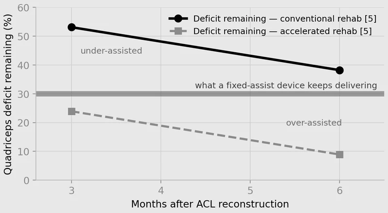

Genuvalens
An assist-as-needed knee exoskeleton for ACL-reconstruction rehabilitation, designed and simulated.
- Type
- Individual design and simulation project
- When
- Summer 2026; presented August 23, 2026
- Guidance
- Dr. Aaron Young and doctoral student Dongho Park, EPIC Lab, Georgia Tech
- Deliverables
- Seven-page IEEE-format report, five figures and two tables; a Colab simulation; a hand-drawn hardware layout
- Tools
- Python, NumPy, SciPy, scikit-learn, Google Colab
What this is. A design study and a simplified simulation with a prescribed recovery curve. The numbers are model results, not patient outcomes. No hardware was built or tested, and clinical validation remains future work.
Abstract
Quadriceps weakness is the longest-lasting deficit after anterior cruciate ligament (ACL) reconstruction and the one most correlated with re-injury on return to sport. Genuvalens is a simulated single-joint knee exoskeleton that provides extension assistance in proportion to continuously measured loading asymmetry between the two legs, so that the help tapers as the reconstructed leg recovers.
The design is an electric quasi-direct-drive actuator with a series elastic element that doubles as a torque sensor, an absolute knee-angle encoder and pressure-sensing insoles under both feet. The controller is impedance control about a time-dependent equilibrium, with an assistance term proportional to the measured asymmetry and three independent safety layers. A logistic-regression classifier reads knee angle and angular velocity and predicts the probability that the athlete is in the rise phase of a squat; a confidence gate turns that probability into the gain set used at each time step. I simulated a two-leg squat-to-stand movement over five repetitions under three conditions. Adaptive assistance reached 98.0% of the target extension at a peak of 3.6 N·m of athlete torque, against 87.2% and 9.6 N·m with no support and 113.9% and 23.3 N·m with fixed support, and its assistance fell 11.8% across the repetitions with no scheduled decline in the code.
Question
Reconstruction repairs the ligament. It does not repair the quadriceps inhibition around it, a protective neurological response that suppresses the muscle through rehabilitation and beyond. A passive brace limits movement without adding any torque. A fixed-assistance device can fill the torque gap, but the amount that is right at three months is over-assistance at six, and an athlete who is helped too much does not rebuild the strength that protects the knee.
So the design question is how much to help, and when to take the help away. I play three sports that all load the legs, ACL tears are common in every one of them, and rehabilitation is the part I wanted to work on. The name comes from genu, the knee.
Method
Plant. A one-degree-of-freedom knee integrated with forward Euler at 0.01 s, with a range of motion from 0 to 80 degrees of extension. Only the reconstructed leg’s torque deficit is a scripted input, a capacity ramp from 50% to 70% across the five repetitions anchored to published quadriceps symmetry after ACL reconstruction. Knee angle, velocity, loading state and assistance are all computed by the simulation each time step.
Sensing. An absolute encoder on the hinge axis gives the knee angle, modeled with Gaussian noise of 0.015 rad. There is no velocity sensor: angular velocity is differentiated from the angle after a 14-point moving-average filter, to avoid derivative kick. Pressure-sensing insoles give left and right ground reaction forces, from which an asymmetry estimator computes the reconstructed leg’s effective capacity.
Control. The torque command is an impedance law, proportional and derivative gains on the angle and velocity error to a target trajectory, plus an assistance term equal to a gain times the measured asymmetry. A logistic-regression classifier trained offline on the simulator’s own output (three conditions, five repetitions, 200 steps, 3,000 samples, a 75/25 stratified split) outputs the probability of rising; an 85% confidence gate selects one of two gain sets, a softer set for a confident rise and a stiffer set otherwise, because stiffer is safer. Three safety layers act independently: the command is clipped to a maximum torque, the device is extension-only, and a mechanical hard stop bounds the range. The actuator rating, 15 N·m continuous and 40 N·m peak, was set from the simulation’s own torque history.
Experiments. Three assistance conditions, none, fixed and adaptive, ran through the same plant with the same random seed. A separate sensor study ran the adaptive controller with ideal, unfiltered and filtered angle sensing to measure what the filter is worth rather than assert it.
Figures




| Condition | Extension completed | Time to complete | Loading symmetry | Peak athlete torque | Assist taper |
|---|---|---|---|---|---|
| No support | 87.2% | 2.00 s | 74.8% | 9.6 N·m | 0.0% |
| Fixed support | 113.9% | 0.81 s | 85.8% | 23.3 N·m | 0.0% |
| Adaptive (Genuvalens) | 98.0% | 1.30 s | 78.6% | 3.6 N·m | 11.8% |
| Sensor condition | Extension completed | Loading symmetry |
|---|---|---|
| Ideal, noise-free | 97.3% | 77.7% |
| Unfiltered, σ = 0.015 rad | 104.5% | 79.6% |
| Filtered, N = 14 | 97.6% | 78.6% |
Findings
- Without support the limb plateaus at 87.2%. That is steady-state error: a proportional-derivative controller under a constant disturbance, gravity, settles where the proportional action balances the load.
- Fixed support overshoots to 113.9% at the highest athlete torque. A schedule sized for a limb doing 50% of the work keeps applying the same effort when the limb can do 70%, and the athlete works against it.
- The taper emerges; it is not programmed. Delivered assistance raises the effective capacity, higher capacity lowers the measured asymmetry, and lower asymmetry lowers the assistance term. Across five repetitions that loop reduced the delivered torque by 11.8%.
- Loading symmetry alone is the wrong target. The fixed scheme scores higher on symmetry, 85.8% against 78.6%, because it overdoses: a limb doing less work looks more symmetric with the healthy one. The purpose of the exercise is for the reconstructed limb to take more of the load as it recovers.
- Quieting the controller costs the adaptivity. Filtering the angle brings overshoot from 104.5% to 97.6%, but velocity noise still leaks through. Sweeping the filter window and derivative gain cuts torque jitter to 27% to 42% of baseline while extension drifts to 100.6% and the taper collapses from 11.8% to 7.2%. Undertuning buys silence at the expense of the behavior the device exists for.
- The gate is a rise detector in practice. Confident hold fires on fewer than 0.2% of time steps, because late rise and the top of the squat are not linearly separable in angle and velocity. It does no harm, since the uncertain state selects the same gains as a confident hold would, but it is a place to improve.
Limitations
The plant is a unit-inertia pendulum, so every torque above is in model units and does not correspond to the body-scaled moments of a real knee in a squat, which would be an order of magnitude larger. The 15 and 40 N·m rating has no clinical meaning until the model is re-derived on a normalized biomechanical plant. The model has a single sagittal joint and does not capture the frontal-plane motion that dominates real ACL injury mechanics. The athlete’s capacity is a preset input rather than something the device measures.
The classifier was trained on the same simulator’s output, with labels defined by time within the rise, in a space where rise and hold are already nearly separable, so its 86.6% deployed accuracy is an easier result than it appears. Less athlete torque is not automatically a better rehabilitation outcome; the objective has to be stated explicitly, for example completing the repetition at the highest effort the athlete can safely sustain, and lower modeled effort alone does not establish better rehabilitation. Hardware testing and clinical validation remain future work.
References
Report. Genuvalens: An Assist-as-Needed Knee Exoskeleton for ACL-Reconstruction Rehabilitation. Leonardo Carvalho, IEEE format, August 2026. Presented August 23, 2026.
- Herzog MM, et al. Trends in incidence of ACL reconstruction and concomitant procedures among commercially insured individuals in the United States, 2002-2014. Sports Health, 2018;10(6):523-531. doi:10.1177/1941738118803616
- Barfod KW, et al. Knee extensor strength and hop test performance following anterior cruciate ligament reconstruction. The Knee, 2019;26(1):149-154. doi:10.1016/j.knee.2018.11.004
- Schilaty ND, et al. Arthrogenic muscle inhibition manifests in thigh musculature motor unit characteristics after anterior cruciate ligament injury. European Journal of Sport Science, 2023;23(5):840-850. doi:10.1080/17461391.2022.2056520
- Grindem H, et al. Simple decision rules can reduce reinjury risk by 84% after ACL reconstruction: the Delaware-Oslo ACL cohort study. British Journal of Sports Medicine, 2016;50(13):804-808. doi:10.1136/bjsports-2016-096031
- Forelli F, et al. Evaluation of muscle strength and graft laxity with early open kinetic chain exercise after ACL reconstruction: a cohort study. Orthopaedic Journal of Sports Medicine, 2023;11(6). doi:10.1177/23259671231177594
- Maggioni S, et al. Assessing walking ability using a robotic gait trainer: opportunities and limitations of assist-as-needed control in spinal cord injury. Journal of NeuroEngineering and Rehabilitation, 2023;20:121. doi:10.1186/s12984-023-01226-4
- Young AJ, Ferris DP. State of the art and future directions for lower limb robotic exoskeletons. IEEE Transactions on Neural Systems and Rehabilitation Engineering, 2017;25(2):171-182. doi:10.1109/TNSRE.2016.2521160
- Brunst C, et al. Return-to-sport quadriceps strength symmetry impacts 5-year cartilage integrity after anterior cruciate ligament reconstruction. Journal of Orthopaedic Research, 2022;40(1):285-294. doi:10.1002/jor.25029